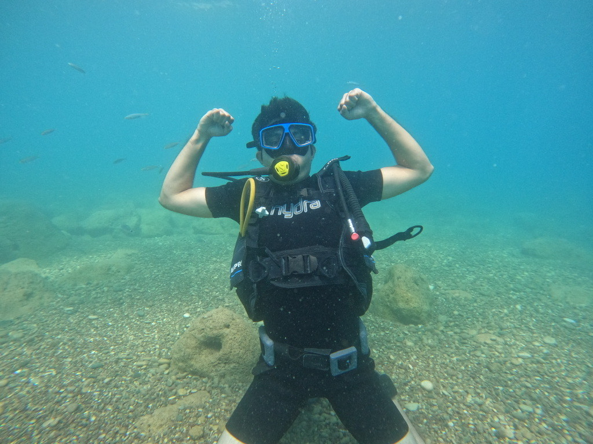

Available for Solutions Architect & Tech Lead roles
Muhammad Raafay Khan
Solutions Architect & Tech Lead
Eight years designing distributed systems in Go, Kafka, and Kubernetes. Currently leading an AI-driven engineering team at EDGE.co.
About
Eight years making backends behave at scale.
I'm a Solutions Architect and Tech Lead specialising in cloud-native distributed systems. I've spent the last eight years designing platforms that process millions of requests daily across FinTech, IoT, and data-catalog domains — most of them modernised from monoliths I inherited.
My bias is toward quiet, high-throughput infrastructure: Go services on Kubernetes, Kafka-driven workflows, and the kind of operational discipline that keeps P95s flat at 3am. Beyond the code, I lead teams through the messy parts — architecture decisions, stakeholder alignment, and more recently, helping engineers adopt AI-driven workflows without losing the plot.
Now
what I'm working on
Engineering Manager at EDGE.co, enabling the team to take an AI-driven approach to delivering SaaS products. The work blends hands-on architecture — migrating legacy services onto a distributed, cloud-native foundation — with the slower, higher-leverage work of changing how a team ships software day-to-day.
Open to Solutions Architect and Tech Lead conversations in parallel. If you're rethinking your backend, your team, or both — let's talk.
Experience
Where I've led and shipped.
-
Oct 2024 – Present Current
Technical Lead — Backend, Data Catalog
Securiti.ai · Islamabad, PK
- Implemented API rate limiting in Go for an ingestion layer handling 200k+ requests per minute, cutting 503 errors from 15–20% to under 1%.
- Designed an incremental backoff strategy that dropped request failure rates from 30–40% to 2–5% after retries.
- Built Python plugins for the data propagation layer, unlocking integrations across multiple enterprise data sources.
- Shipped high-throughput metadata APIs on Go, Kafka, and Kubernetes for catalog indexing at scale.
-
Sep 2022 – Oct 2024
Staff Software Engineer — Backend
Fiber Mountain · Islamabad, PK
- Led the transformation of five monolithic modules into event-driven microservices, scaling from 2,000 to 30,000 nodes — a 1,400% improvement.
- Built a distributed, load-balanced network discovery service handling 50M+ daily requests with a 220% speed gain and 98% fewer timeouts.
- Refactored the IoT state generator to process 2M+ device states per hour at a steady 300ms response time under 10k concurrent load.
- Introduced Redis caching that reduced P95 latency by 65% and database load by 40%.
-
Feb 2021 – Sep 2022
Senior Software Engineer — Backend, FinTech
Retailo Technologies · Islamabad, PK
- Engineered a cloud-native Routing SaaS on AWS Fargate that scaled from 8 to 2,000+ city clusters (250×) while cutting compute costs by 95%.
- Designed a gRPC calculation engine handling 30k+ requests per hour across six microservices with a 50ms P99 latency.
- Led a ZATCA-compliant taxation module processing 2,000+ secure receipts per hour with zero-downtime deploys.
- Built a recommendation engine for 100k+ daily active users, lifting product discovery by 35% and AOV by 22%.
- Shipped event-driven order processing handling 500k+ daily transactions at a 99.95% success rate.
-
Jun 2018 – Jan 2021
Software Engineer — Full Stack
Xgrid Inc · Islamabad, PK
- Expanded a Cisco SD-WAN orchestration platform to support 10,000+ network devices with a 100% throughput gain.
- Optimised a real-time dashboard by 70% using WebSockets and Web Workers across 3k+ IoT devices.
- Built a CI/CD pipeline that took release cycles from two weeks down to two days at a 95% success rate.
-
9-month contract
Consulting Solutions Architect & Team Lead
12iD · Stockholm, SE (Remote)
- Migrated a monolith to microservices over gRPC and message queues, lifting reliability from 95% to 99.5%.
- Shipped Node.js SDKs and Ethereum integrations adopted by 50+ enterprise clients, with a 60% productivity gain for integrators.
Expertise
The stack I reach for.
- Distributed systems
- Microservices Event-Driven CQRS DDD Cloud-Native System Design
- Languages & runtimes
- Go TypeScript JavaScript Python Java Node.js NestJS Fiber Spring Boot gRPC GraphQL
- Cloud & infrastructure
- Kubernetes Docker Helm AWS EKS Fargate Lambda S3 GitOps Jenkins
- Data & messaging
- Apache Kafka RabbitMQ Redis PostgreSQL MongoDB Elasticsearch DynamoDB Cassandra
- Observability & practice
- Grafana ELK DataDog New Relic CI/CD TDD
Contributions
Still writing code.
Leadership doesn't mean stepping away from the editor. Here are the last six months of commits across my public GitHub.
Contact
Let's build something together.
Whether you're rethinking an architecture, scaling a team, or weaving AI-driven workflows into how your engineers ship — I'd be glad to hear what you're working on.